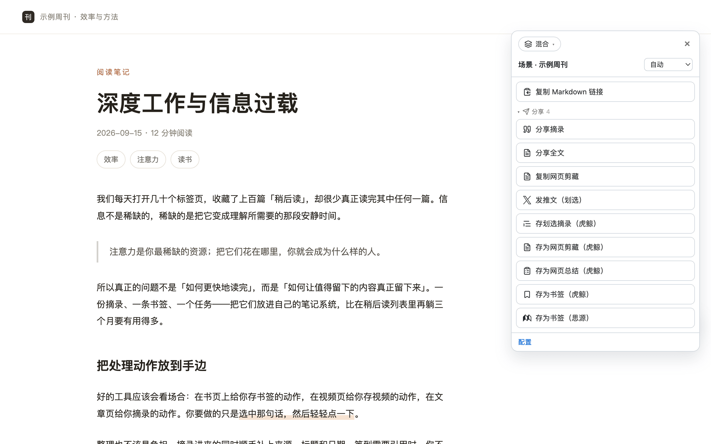
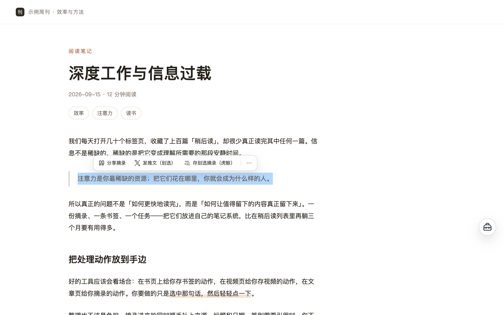
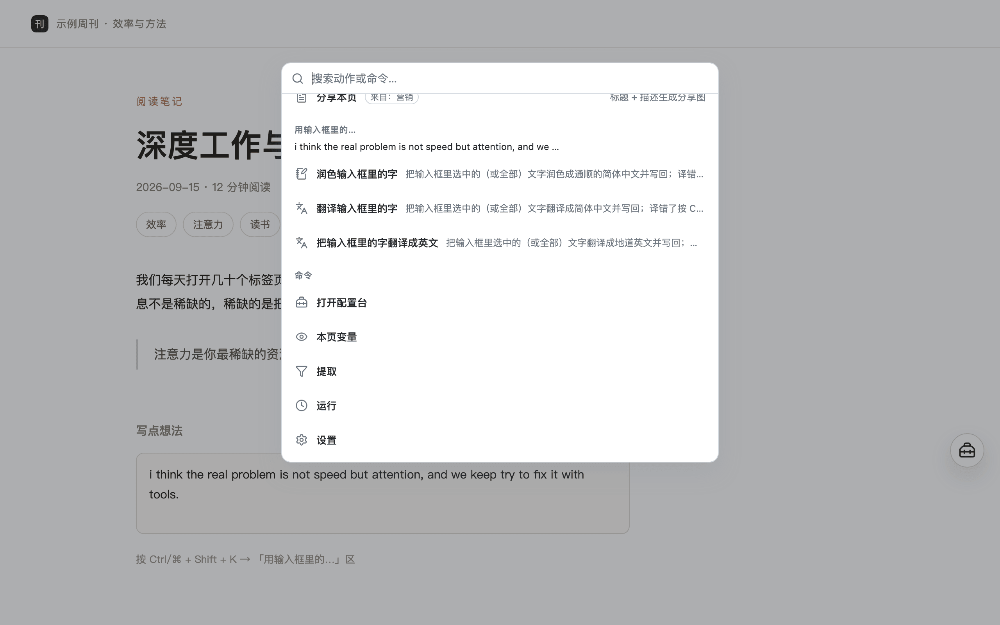
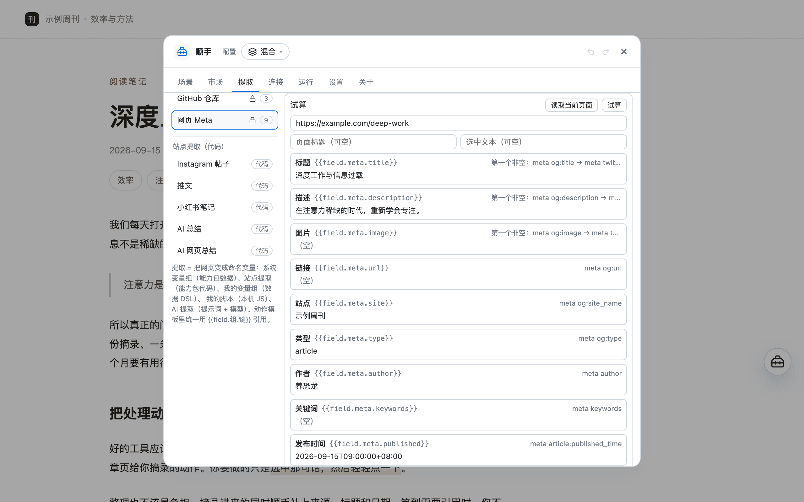
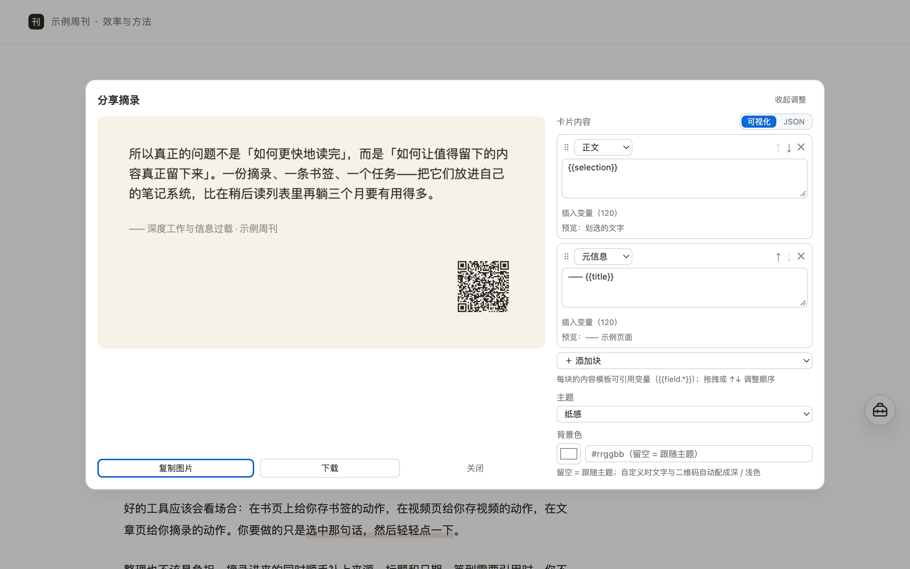
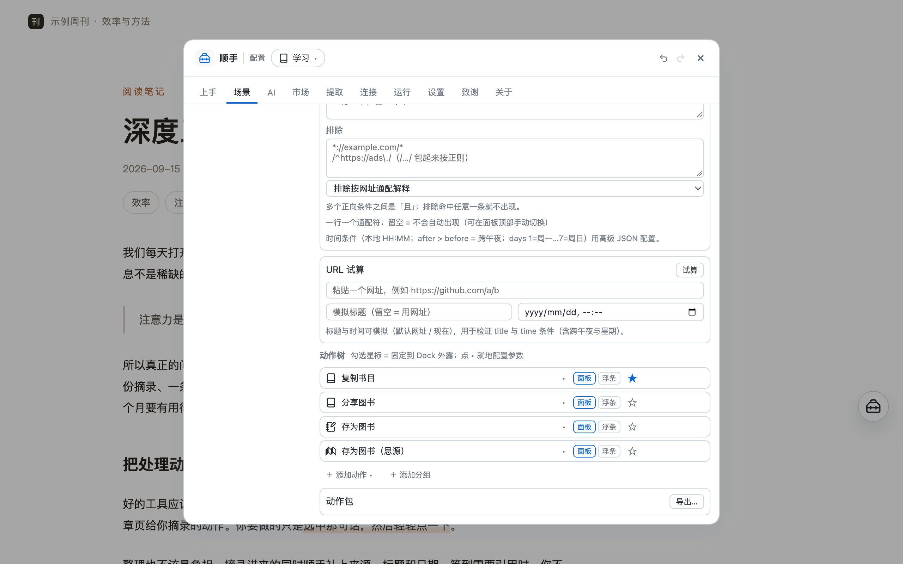
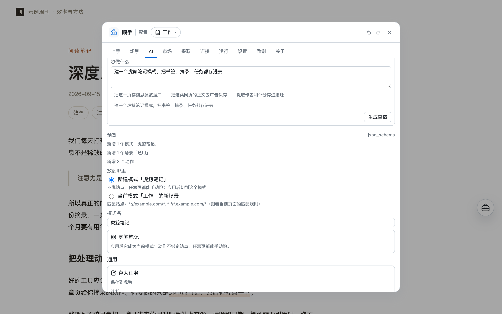

Douban book · movie · game
- 17 / 20 / 11 fields extracted automatically from books / movies / games
- Copy the info, generate a share card
- Write to Orca Note / SiYuan
Browser extension / userscript · Desktop and mobile · Available on the Chrome Web Store and Edge Add-ons
Whatever you're doing on the web, done right at hand.
Open a site and Shunshou puts that site's moves at hand — clip the article, make a share card, translate a selection, click and fill forms, one set per site. Actions, fields, and templates are all edited visually in the Studio, no code required — or just tell the AI in one sentence what to set up, or ask it what you could do on this page.
No account · No server · Config and secrets stay on your machine

The four most used
Each one's fields, cleanup rules, and card layout are adjusted visually in the Studio — a wrong change undoes in one click. These four ship in the box, but they're not the limit: what runs in the bubble below is decided by your prompt.
Above the selection, only the actions that actually use it are listed — usually two or three, the rest go into ⋯. Clicking the capsule won't clear your selection; scrolling, clicking blank space, or pressing Esc dismisses it. If you don't like it, turn it off in Settings and keep using the orb as usual.

The command palette grows a "Use the input box…" section: it first shows you the exact lines it read, then lists only the actions that really use the input box content. Rather not to open the palette? Right-click inside the box and the same group is there.

Built-in site rules cover Douban books/movies, GitHub, Bilibili, WeChat Official Accounts, and SSPAI; other pages use the article engine (Readability) to detect the main content automatically. Hidden content (including ads hidden by ad blockers) doesn't make it into the clip.
.md file; paths support subfolders and dates (e.g. Shunshou/2026-09-17/Title.md), ready to drop into your Obsidian / SiYuan vaultobsidian:// deep link, no server involved); the path inside the vault supports subfolders, and collisions can append or overwrite
Post and note images are auto-completed (carousels included) and laid out as an "image wall" card; four themes (paper / ink / brand / pure white) and four sizes (long / 4:5 / 3:4 / 1:1); very long text paginates automatically and is never cut off, and the bottom-right can carry a QR code to the source page; the body's inline styles (bold / italic / code / highlight / links) come through as well.

Douban book / movie / game pages each parse 17 / 20 / 11 fields (synopsis, episode count, format, and more), written into your own notes app in one click — no copy-paste, no filling in forms field by field.

On the Studio's "AI" page, describe what you want (e.g. "clip this kind of page's article ad-free" or "build an Orca Note mode with bookmark, excerpt and task actions") and AI drafts a config — a single action, a batch of actions (with follow-up steps), or a whole mode, with capability, params, content scope and variables filled in and shipped recipes as the parameter baseline. Nothing changes until you confirm; landing and auto-run are confirmed in the preview (auto-run is off by default and states its consequence when ticked); preview it, then click "Apply" (one-step undo).

The little bubble that floats up on selection isn't a "translate feature" — it's the mechanism of "show text results in place", and translation is just its first recipe. Swap the prompt for fact-checking, logic review, summary, or rewriting and it's another action; the same result can also continue to a share card or a post to X (which runs only after you say yes).
Context-aware
Everything above has ready-made actions on these sites. Sites and their matching rules (URLs) are yours to change, and actions only show up where they belong. Modes are organized by purpose (out of the box: Daily / Work / Study / Marketing — Daily needs zero setup, Work and Study write to notes, Marketing makes cards and posts); to switch a whole workflow, switch a mode instead of editing actions one by one. Backends such as Orca / SiYuan are global "connections" — configure one and its actions appear automatically.
owner/repoAutomation
Every action can be set to "auto-run" or "suggest only" — it runs for you when the matching page opens (unless the site is set to "Quiet" or "Off"), or just gives you a nudge. Off by default, enabled per action, with delay, cooldown, and ask-before-running; chains can also click buttons, fill inputs, wait for elements, and capture page elements as images.
Auto-run "Save as movie / book / game (SiYuan)" on Douban book / movie / game pages — browse and it's in your library, with no clicks at all; turn on "ask before running" if you'd rather confirm before writing.
One action chains "Click 'Expand full text' → Wait for the element → Copy page clip"; works for collapsed comments and lazily loaded long articles.
Pick the site's search box and have Fill input use the selection — select a phrase and click once to fill it in (React-controlled search boxes work too).
Put the caret in any site's input box, press Cmd/Ctrl+Shift+K (same key in the userscript; the right-click menu is extension-only), and act on the text you just wrote —
Polish into Chinese / translate into Chinese / translate into English ship out of the box. The result replaces the text in that very box,
caret parked at the end, and a bad pass is undone with Cmd/Ctrl+Z; while the model works, the palette leaves a "Running…" line in place.
Open a report / dashboard page and capture a chosen area as PNG; you can also pick several blocks at once to export them one by one, or stitch them vertically into one long image. Pick the selector right on the page.
Auto-run is off by default and enabled per action; you can also use "suggest only", or set it to ask before running. Once a site is set to the "Quiet" tier it never triggers automatically (you can still open the orb manually); action packs from the "Action Market" that ship with auto-run are off after installation too — whether to turn it on is always your call.
And more
An action can carry a series of follow-up steps: after the main step succeeds they run in order. Example: save an Orca Note bookmark, then write a row to a SiYuan database (one click, both libraries populated); after saving, copy "《Title》 Link" to the clipboard. A step can also be set to "wait for my confirmation" — it doesn't run automatically, but waits for your click on the result surface (say, read the AI translation first, then decide whether to save it to notes).
The built-in "Translate" ships with two such next steps: share card (original + translation) and post to X (translation + link).
Actions can be set to "auto-run when the matching page opens" (unless the site is set to "Quiet" or "Off"), and chains can click buttons, fill inputs, and wait for elements; pick the selector right on the page. You can also capture any element as an image, and stitch several into one long image. Off by default, enabled per action.
Don't want a dashboard, bank, or intranet page touched? Click "This site" at the top of the orb panel to turn it off right there, or press and hold to pick a tier: Dock only / Selection only / Quiet (no auto-run, no suggestions) / Off (no UI mounted, and not counted in your browsing footprint). Scope can be "this site incl. subdomains / this page only"; resume from the extension icon (userscript: the script-manager menu), and manage the list under Studio "Run → Sites".
Connect your own OpenAI-compatible model (DeepSeek / OpenRouter / SiliconFlow / local Ollama all work). The prompt is the config: hand {{content}} to the model and it produces summaries / copy / keywords, used in any action just like ordinary variables. Nothing depends on AI unless you turn it on — and translation still works, because it runs on the browser's built-in on-device translation.
Not sure which action to set up? Describe what you want in one sentence (e.g. "clip this kind of page's article ad-free" or "build an Orca Note mode with bookmark, excerpt and task actions") and let AI draft a config — a single action, a batch of actions (with follow-up steps), or a whole mode, with shipped recipes as the parameter baseline. Nothing changes until you confirm; landing and auto-run are confirmed in the preview (auto-run is off by default and states its consequence when ticked); preview it, then click "Apply" (one-step undo). It reuses the model connection you configured. You can also flip it around — click "See what you can do on this page" and AI suggests 3–5 candidate actions for this kind of page.
Orca Note (MCP) and SiYuan (kernel API): three targets — database / document & daily note / document database — with missing columns created automatically, duplicate checks before saving, and images localized into the notes asset library. You fill in the connection; it talks straight to your service.
Clips, share cards, and articles can all be saved as local files (Markdown / text / images). Paths support variables and subfolders — e.g. Shunshou/{{date:YYYY-MM-DD}}/{{title}}.md, ready to drop into your Obsidian / SiYuan vault; names are auto-numbered on collision, and you can choose to overwrite. Files are only written to your own Downloads folder — your existing download history is never read or listed.
With Obsidian installed, write a page clip straight into your vault — via an obsidian:// deep link handed to Obsidian, with no server in between; the path inside the vault supports subfolders (e.g. Shunshou/{{date:YYYY-MM-DD}}/{{title}}), collisions can append or overwrite, and by default the note doesn't pop open.
Subscribe to the official catalog and install action packs others have made by tag or search; dependencies and conflicts are reported, and packs can be checked for updates or uninstalled. Action packs are pure data (actions / extraction rules / prompts) with no code or secrets.
Press Ctrl/⌘ + Shift + K to open the command palette — type a few letters to filter actions, then Enter to run; what you type can also be used directly: the palette's "Use this text…" section lists actions that reference {{input}}, and a shipped "Save a note" action stores one sentence straight into Orca Note / SiYuan.
Modes / scenes / actions / variable groups are all visual config: undo a wrong change with ⌘Z, import, export, and share. A field source can be a selector / "label:value" / meta / JSON-LD / URL regex / selection / template / try in order, and you can add transform chains; built-in variables include full-page text / clip / table / clipboard / run-time pick.
If you write JS, you can write a short extraction script for a site, with { url, title, selection, document } as input. Stored only on your machine, not in the config and not included in export / sharing; off by default — turn on "Allow User Scripts" on the extension's details page.
Local-first
Writing to notes and calling models connect directly to the addresses you configure, never through the author. Exported config contains no secrets.
No ads, no tracking, no crash reporting. Action usage and browsing footprint stay on your machine, can be turned off or cleared at any time, and are never exported; sites set to "Off" aren't counted in your browsing footprint.
The orb and panel render inside the extension's own Shadow DOM and don't touch page styles; clip cleanup only works on a copy of the page. It only operates on a page when you explicitly configure page actions like "click / fill" in an action, following the selectors you chose. It only acts on a page when you explicitly configure a page action such as "Click / Fill", or use an action that works on the focused input box — and write-back has guards: the page replaced the box mid-way, you typed more while waiting, the box is mid–IME composition, or it is read-only. Any of these aborts with a plain-language message and never overwrites what you typed
Install
Go to Releases and download the latest shunshou-extension-*.zip, then unzip it to any folder (don't double-click it to run directly).
Type chrome://extensions in the address bar (edge://extensions on Edge) and turn on "Developer mode" in the top right.
Click "Load unpacked" and select the unzipped folder. Then open any page and look at the bottom-right (available on every site by default).
Available now on the Chrome Web Store (install it) and on Edge Add-ons (install it), both with automatic updates. You can also grab the zip from Releases and load it manually (it works just the same; when a new version is out, the Studio's "About" page can check for updates manually — just load the unzipped folder again and your config is kept).
Prefer not to install an extension, or using a phone? Install a userscript manager first — on desktop Tampermonkey / Violentmonkey; on Android, Firefox for Android (or Kiwi); on iOS, Userscripts in Safari. Then open the install link: install shunshou.user.js; the manager checks for updates automatically. The injected UI is adapted to mobile: tap the orb to open the actions panel, pinned actions stay visible, and "In-page config" fills the screen. A few desktop-only capabilities (browsing footprint covering just the current tab, saved-file subfolders flattened) degrade explicitly and say so.
FAQ
No. Shunshou has no account system — install it and it works; the out-of-the-box "Daily" mode needs zero configuration.
Content only moves in two places: the actions you click, and the notes / model services you configure yourself. There's no server on the author's side, so none of your data reaches us.
Config and secrets stay on your machine, and exported config contains no secrets. See the Privacy Policy for details.
Desktop is a Chrome / Edge extension (same engine). You can also install the userscript, on Chrome / Edge / Firefox desktop as well as Android (Firefox for Android / Kiwi) and iOS (Safari + Userscripts). It's free, with no ads and no features locked behind a payment.
By default it uses your own browser's built-in translation (desktop Chrome / Edge 138+): no connection to configure, no cost, and the translation is generated entirely on your computer without going through any server — the author included. Nobody can see what you translated.
The browser downloads the language pack itself on first use of a given pair (tens of MB, once — after that it works offline). Where the browser can't do it (userscript host, older browsers, phones), you can plug in your own AI connection (any OpenAI-compatible model service: DeepSeek / OpenRouter / SiliconFlow / local Ollama…) for translation or polishing — and in that case the text is sent only to the endpoint you filled in.
No. Actions, matching rules, extraction fields, and content templates are all adjusted visually in the Studio, and a wrong change undoes in one click. Only "Local scripts" is an escape hatch for people who write JS — you don't miss anything by not using it.
Auto-run is off by default and enabled per action; you can also use "suggest only", or set it to ask before running — for side-effecting actions like writing to notes, we recommend keeping "ask before running" on.
Once a site is set to the "Quiet" tier it never triggers automatically, and the orb can still be opened manually; auto-run only executes on matching pages you currently have open, never as background bulk scraping. Action packs from the "Action Market" that ship with auto-run are off after installation too.
Extension: download the new zip and go through "Load unpacked" again — your config is kept. Userscript: your manager checks for updates automatically, usually nothing to do. New default scenes / actions in a new version are delivered incrementally the next time you open it: what you changed stays, and what you deleted doesn't come back.
Yes. Add a URL matching rule and a few actions, and that's a new scene; to save effort you can install action packs others share from the "Action Market", or export a scene you've configured as a .action-pack.json to send to a friend.
Yes. In the extension, the shortcut uses the browser's native mechanism: open chrome://extensions/shortcuts (Edge: edge://extensions/shortcuts) to rebind it. The "Shortcuts" section on the Studio's "Settings" page shows the current binding and warns you when it's unbound. The default is Ctrl/⌘ + Shift + K, which opens the command palette.
The userscript has no such mechanism: its keys are fixed and can't be changed, and the shortcut may stop working if another extension or the site takes it over — you can still open the command palette from your script manager's menu.
Also note that the right-click menu is extension-only: right-click a page to see the "Shunshou" submenu. The userscript doesn't have it.
Contact
WeChat hqweay
Email hqweay@gmail.com
It sees which site you have open and puts the right actions at hand.